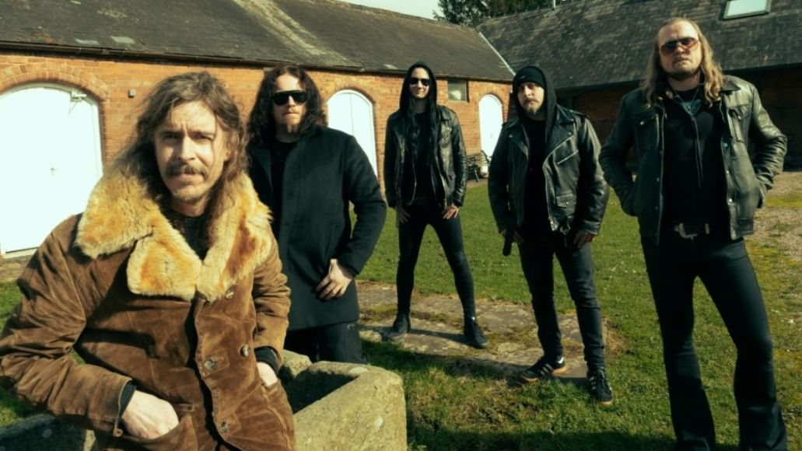

Historia
De Estocolmo al infinito
El nombre viene de Opet, la "ciudad de la luna" de la novela The Sunbird de Wilbur Smith. Esta es la historia de una banda que nunca quiso quedarse quieta.
Formación actual
Mikael Åkerfeldt es el único miembro que ha estado en todos los álbumes.
